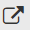
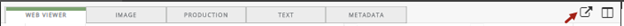
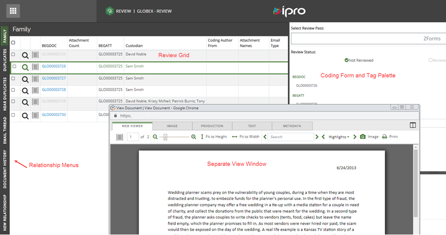

To view the document in a separate, 'pop up' window, click

located to the left of the icon as shown in the following figure.
icon as shown in the following figure.

When the separate view is selected, the document view tabs window displays in the foreground, and the relationship menus, review grid, coding form/tag palette display in the background.

The document 'pop up' window may be dragged around the viewing area, docked, minimized, and maximized. When the document 'pop up' window is closed, the display returns to its original layout.